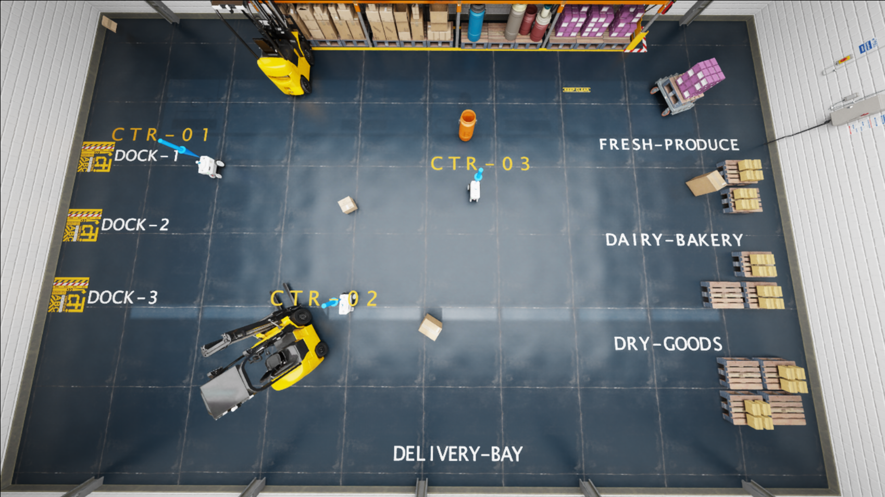
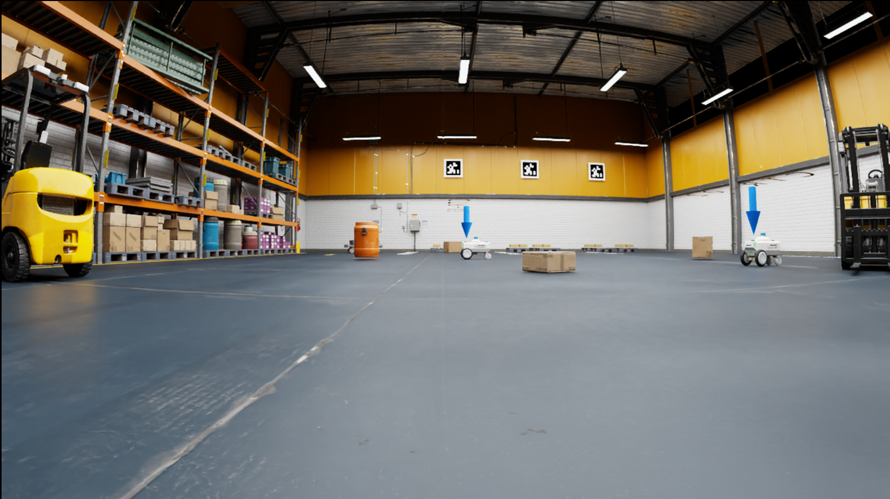
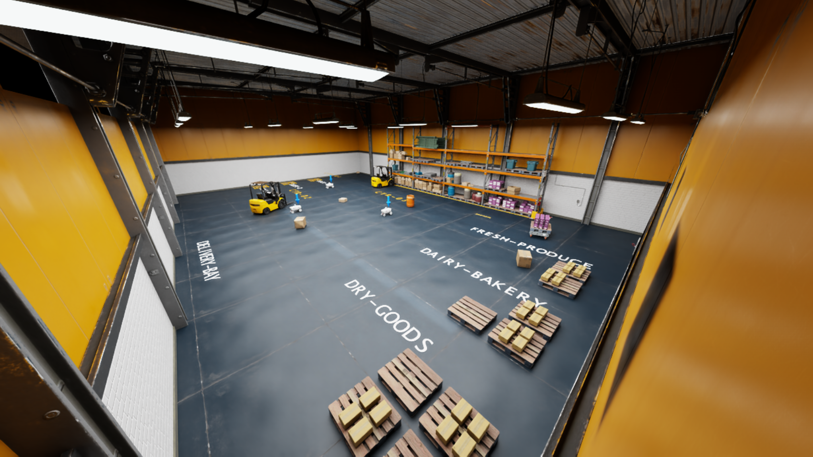

AdaptiFleet — coordinated fleet demo
Fleet executing assignments with VLM safety oversight and LLM dispatch.
Multi-robot system built in NVIDIA Isaac Sim with autonomous task assignment, path planning, and docking — extended with a Gemini Flash VLM safety layer for real-time conflict detection and an LLM planner that dispatches robots from natural language.
Fleet executing assignments with VLM safety oversight and LLM dispatch.


